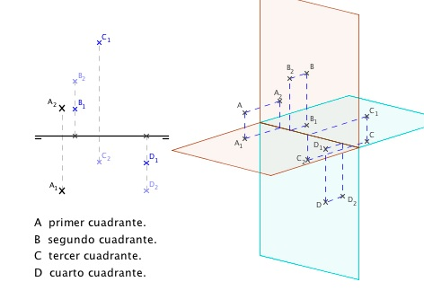
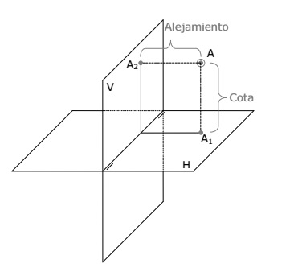
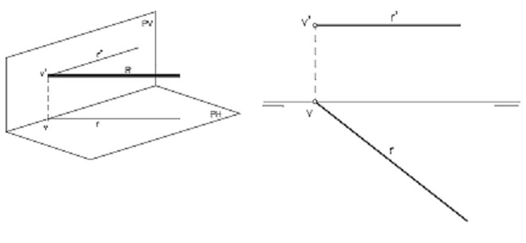
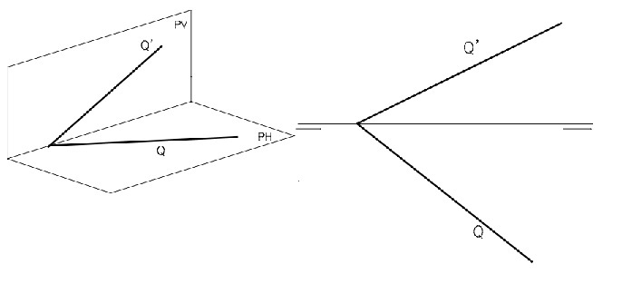

El Punto
El punto es la unidad más elemental que se puede representar. Un punto queda definido por su proyección vertical
(es decir, la proyección espacial sobre el PV) y su proyección horizontal (la proyección del punto sobre el PH).
La proyección vertical se denomina comúnmente con una letra mayúscula más un apóstrofe (A"),
mientras que la horizontal se designa con la misma letra mayúscula sin apóstrofe (A’).
Un punto puede estar situado en cualquiera de los 4 Cuadrantes y eso determinará su representación en Diédrico.


La Recta
La recta viene determinada por dos proyecciones. Las rectas se suelen nombrar con letras minúsculas desde la "r":
Una proyección vertical representada con dos apóstrofes: r", s", t"…
Una proyección horizontal, representada con un apóstrofe: r’, s’, t’…
Las rectas pueden estar colocadas de muy diferentes maneras con respecto a los Planos de Proyección.
Lo más común es que atraviesen dichos Planos de Proyección y, por lo tanto, pasen de un cuadrante a otro.

El Plano
Un plano se define en Sistema Diédrico por sus trazas. Las trazas de un plano son las líneas de intersección del plano con los Planos de Proyección.
La traza con el Plano de Proyección Horizontal (PH) o Traza Horizontal del Plano. Se suele denominar con las letras mayúsculas P, Q, R…
La traza con el Plano de Proyección Vertical (PV) o Traza Vertical del Plano. Se suele denominar con las letras mayúsculas con prima P’, Q’, R’…
